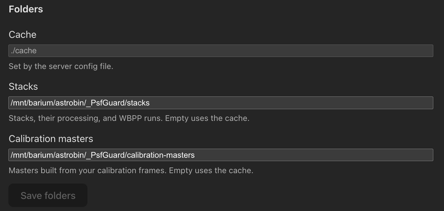
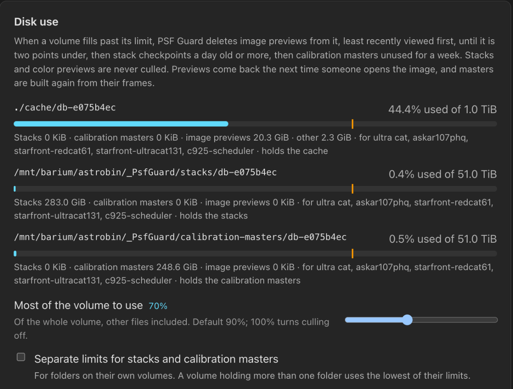
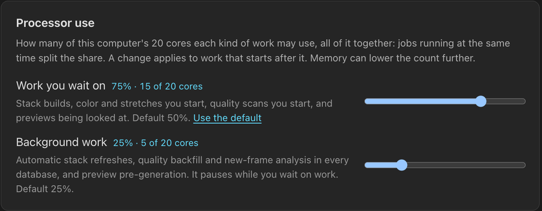
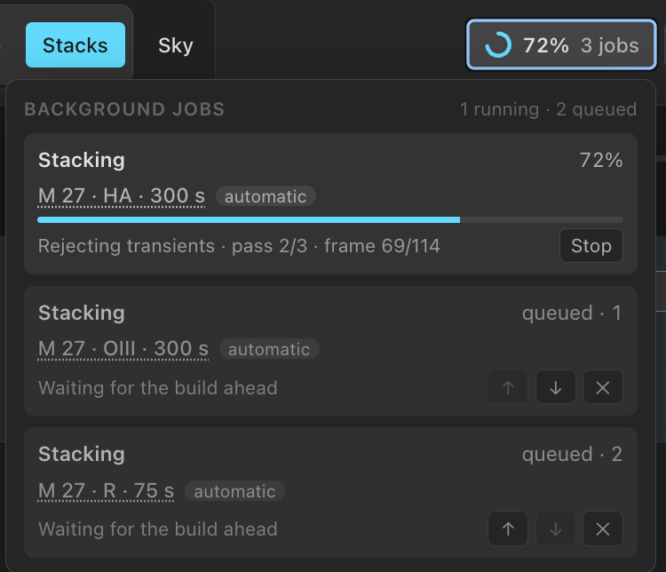

Storage and Performance
Choose where PSF Guard keeps the files it makes, how full their disks may get, and how much of the processor its work may take. This page also covers the header's job queue, what survives a restart, and the desktop app's log files.
Choose where files go
Each database keeps the files PSF Guard generates in three folders, with a slug folder per database in each:
| Folder | Holds | Set with |
|---|---|---|
| Cache | Image previews, star lists, plate solves, quality scans and other per-image results | --cache-dir, [cache] directory |
| Stacks | Stacks, color previews, WBPP stacks, saved processing, and WBPP runs that have no runs folder of their own | --stack-dir, [cache] stack_directory |
| Calibration masters | Masters built from your calibration frames | --calibration-dir, [cache] calibration_directory |
Stacks and masters go in the cache unless a folder of their own is named. Name one to put them on another volume: stacks on a large network share, for example, with the cache on a fast local disk. The command line wins over the config file, and both win over Settings.
# On the command line
psf-guard server --stack-dir /mnt/nas/psf-guard/stacks \
--calibration-dir /mnt/nas/psf-guard/masters
# Or in the server's TOML file
[cache]
stack_directory = "/mnt/nas/psf-guard/stacks"
calibration_directory = "/mnt/nas/psf-guard/masters"Choose folders in Settings
Open Settings → Storage → Folders, in the desktop app too. Type or browse to a folder for Cache, Stacks or Calibration masters, then click Save folders. Leave Stacks or Calibration masters empty to use the cache. A folder the server's config file fixes reads Set by the server config file and cannot change here. Choosing folders needs database management.

A folder saved in Settings takes effect at the next start, which moves the files there first. Until then the field names the folder still in use. In the desktop app, Restart now restarts the whole app to carry out the move.
- Each file is renamed into place. Across file systems it is copied into
a
.partialfolder that is renamed into place before the original is removed. Copies keep their file times, which the disk limit reads. - Folders merge. A file already at the target with the same size and time counts as moved, so a start that stops halfway finishes the move the next time. A file that differs is a conflict.
- If a move fails, PSF Guard moves the files back, keeps using the old folder, says why under Folders, and tries again at the next start.
- Calibration master records in the catalog follow their files, so masters are not built again.
- A large move delays the start. The log names each folder it moves.
- Settings refuses folders that sit one inside another.
Disk use
Settings → Storage → Disk use shows every volume the three folders sit on: how full it is, its limit, which folders and databases it holds, and how much of it is stacks, calibration masters and image previews.

Most of the volume to use (90% by default) is the highest
share of the whole volume, other files included, that PSF Guard lets it
reach, as df counts it. 100% turns culling off. Changing the
limit needs database management.
What goes when a volume is over its limit
Every five minutes, and right after a limit changes, PSF Guard reads each volume. When one is over its limit, PSF Guard deletes only what lives on that volume, in this order:
| Order | Deleted | Rule |
|---|---|---|
| 1 | Image previews, annotated previews, star lists | Least recently viewed first, until the volume is two points under its limit. Anything viewed in the last quarter hour stays. |
| 2 | Stack resume checkpoints | A day old or more. |
| 3 | Calibration masters | Unused for a week, least recently used first. Only while no build runs, and only when that brings the volume back under. |
| Never | Stacks, color previews, WBPP stacks | They take minutes to hours to make. |
A preview comes back the next time someone opens the image, and a master is built again from its frames when a stack needs it. A master whose frames are gone, or that the catalog does not record, is never deleted: it could not be built again. A limit changed in Settings checks the volumes at once but leaves masters to the next regular pass.
Limits for stacks and masters
Tick Separate limits for stacks and calibration masters to give folders on their own volumes limits of their own: Most of the stack volume to use and Most of the calibration master volume to use. A volume that holds more than one folder uses the lowest of their limits. A full stack volume never deletes previews from a cache on another disk.
- Background preview pre-generation stops two points under the cache volume's limit, so it never makes previews the next pass would delete. Previews someone opens are still made.
- A volume still over its limit once nothing more may go shows in red.
- Sizes are measured at most hourly, and after a cull.
- On a file system that keeps snapshots, deleted previews free no space until the snapshot goes.
- PSF Guard records when a preview or master is used, because many mounts, NFS among them, do not record reads.
- Windows servers do not read their volumes, so the limit does not apply there.
- To make previews smaller on disk, set
preview_format = "jpeg"; see Configuration & API.
Hourly cleanup
Rebuilds write new files beside old ones. Once an hour, in every database and whatever the disk limit, PSF Guard deletes what nothing uses any more:
| What | Deleted |
|---|---|
| Stacks a newer build of the same target and channel replaced | Once no index or job names them, after a day |
| Stretch and deconvolution results | A week after they were last selected or used |
| Artifact searches | When their stack is gone |
| Stacks of deleted projects | With the project's index. Merging projects keeps the merged project's stacks. |
| Stack resume checkpoints | After 30 days with no build writing or resuming from them. At once when no build could resume from them, such as one from an older stacking pipeline. |
| Calibration masters a newer master built from the same frames replaced | Once unused for a day and named by no stack |
| Half-written masters a stopped build left | A day old |
| WBPP run folders | Never: a run's output may exist nowhere else |
Masters are swept only while no stack build runs. An index that cannot be read stops the sweep of that database rather than leaving what it names unprotected; the server log names the file.
Processor use
Settings → Performance → Processor use sets how many cores each kind of work may use, as a share of the logical cores. A change applies to work that starts after it, without a restart.

| Share | Covers | Default |
|---|---|---|
| Work you wait on | Stack builds, color and stretches you start, quality scans you start, previews being looked at | 50%, or scan_worker_ratio |
| Background work | Automatic stack refreshes, quality backfill and new-frame analysis in every database, preview pre-generation | 25%, or background_worker_ratio |
Each share is a limit for all such work together, not for each job. Jobs running at once split it: a stack refresh, quality backfill in every database and preview pre-generation share the background share. A job takes the workers free when it starts and gives them back when it ends. It never waits: one that starts while the share is spent runs on one worker. Work you wait on also pauses background work.
The share covers Seiza's own threads. Since Seiza 0.24, each job runs debayering, stretching, star detection and stacking on the workers it was given, so one background preview no longer keeps every core busy. Previews you look at, plate solves, star lists and PSF views still use every core, since background work pauses while they run. Quality scans plate-solve several frames at once, up to their share. RC-Astro's tools are programs of their own and choose their own threads.
A share chosen here is kept in the registry and wins over the config file.
Use the default goes back to the file's value. Memory can
lower the count further: a pool never holds more frames than half the free
memory allows. GET and PUT /api/settings/workers
read and set the shares; null means the default.
Background jobs in the header
The header shows background work as one small chip: the overall progress and the number of jobs. Hover, focus or click it to open the queue. It lists every catalog refresh, quality scan, stack and color build, and WBPP run, running or queued, on any database.

- ↑ and ↓ move a waiting stack build or WBPP run in its line. The line, not the order you asked, decides what runs next.
- ✕ takes a waiting job out of the line.
- Stop ends a running stack build or WBPP run after asking once: Stop it or Keep. A color composition already running has no Stop; it finishes within minutes.
- Click the target or database under a row to open what it works on: a build's or WBPP run's stacks, a quality scan's sequence, or a refreshed database's images.
- A quality scan that finished with errors stays on the chip, which reads Finished with errors once nothing else runs. Its note offers Open the sequence and stays until you dismiss it.
Changing the line needs write access. A stack build's line reads, for example, Rejecting transients · pass 2/3 · frame 4/14 through the final rejection pass, and a calibration master build names the master and what Seiza is doing with it.
Automatic refreshes
With Rebuild stack previews on their own on, under
Settings → Stacking, new frames and grade changes queue
a refresh after a settling delay. A refresh still settling is not listed or
counted: nothing runs yet. It appears once it builds, marked
automatic, and uses the background share. See
Stacks.
Scripts can start a settling refresh at once or drop it until the next change:
# Builds running first, then the line in order, then settling refreshes under "scheduled"
curl localhost:3000/api/stack-activity
# Start one within seconds, or skip it
curl -X POST localhost:3000/api/stack-activity/scheduled/run-now \
-H "Content-Type: application/json" -d '{"database_id":"my-db","project_id":2}'
curl -X POST localhost:3000/api/stack-activity/scheduled/skip \
-H "Content-Type: application/json" -d '{"database_id":"my-db","project_id":2}'
# Move a waiting build (0 is next) or take it out
curl -X POST localhost:3000/api/stack-activity/<job_id>/move \
-H "Content-Type: application/json" -d '{"position":0}'
curl -X POST localhost:3000/api/stack-activity/<job_id>/cancelAfter a restart
The job queue survives a restart. PSF Guard keeps a journal beside the
database registry (config.jobs.json next to
config.json), rewritten a few seconds after the queue changes
and once more when the server stops cleanly: Ctrl+C, SIGTERM, or quitting the
desktop app. On start it puts the queue back before the automatic scheduler
starts anything:
- Stack and color builds come back in order, each prepared again from the catalog as it is now. One whose database is gone, or that finished before the restart, is skipped with a note in the log.
- A build cut off part way resumes from its checkpoint where it can. One cut off by two restarts in a row is not started a third time, since it is the likelier cause of the restarts.
- A build whose disk is not mounted yet is retried every minute for half an hour.
- Automatic refreshes still settling keep their due times, or run at once if those passed.
- Waiting WBPP runs keep their place. A WBPP run the restart cut off shows as stopped rather than starting again from nothing; start it again when you are ready.
- With automatic previews on, every database is checked once after a start, so frames that arrived while the server was down still reach their stacks.
A server started without a registry keeps no journal.
Desktop log files
The desktop app writes one log file a day and keeps a week of them. Open logs, at the foot of Settings, opens the folder:
| Platform | Log folder |
|---|---|
| Windows | %LOCALAPPDATA%\com.theatrus.psf-guard\logs |
| macOS | ~/Library/Logs/com.theatrus.psf-guard |
| Linux | ~/.local/share/com.theatrus.psf-guard/logs |
The log holds what a server prints to its console: folder moves, the
queue put back after a restart, and each frame a stack leaves out or rejects,
and why. RUST_LOG sets the level; the default is
info. A server run from the command line or in Docker logs to
its console.